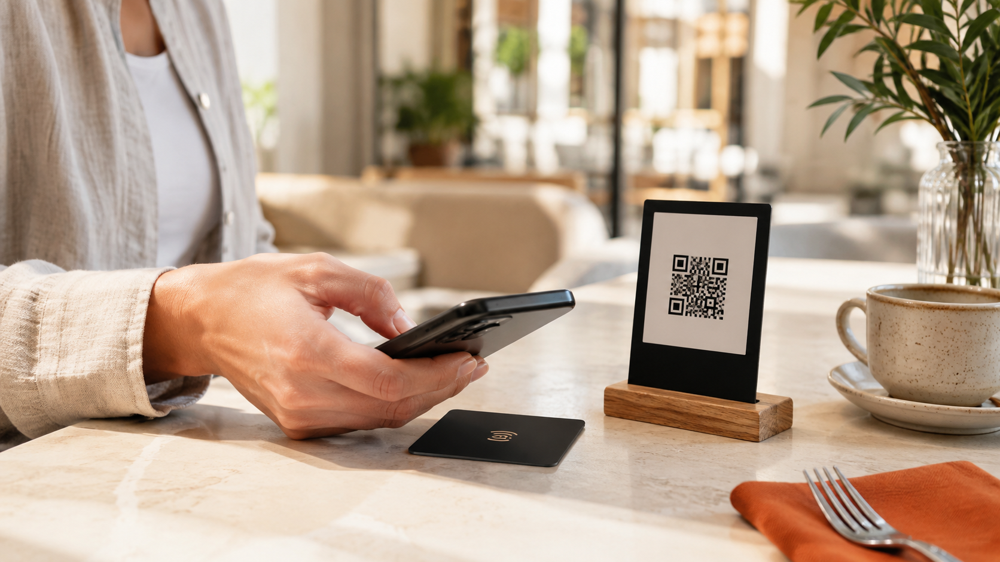

AURAMENUTABLE · 08
SCAN
TO TASTEQR MENU · 24/7
TO TASTEQR MENU · 24/7
PDF açan sıradan bir QR kod yerine, markanıza özel, mobil uyumlu, hızlı ve kategori bazlı dijital menü tasarlıyoruz. Fiyat ve ürün güncellemeleri daha kolay olur.
Dijital menünün giriş noktasını da tasarlıyoruz: masa kartı, ödeme noktası veya paket üzerinde markanızla uyumlu QR ve NFC.
3D menü tasarımlarını gör ↗
Telefon ekranına göre tasarlanmış bir arayüz: kategoriler, ürün fotoğrafları, açıklamalar, fiyatlar ve gerekli dil seçenekleri.
Logo, renk, font ve restoran atmosferi.
Kahvaltı, ana yemek, içecek, tatlı ve daha fazlası.
Müşteriye iki hızlı erişim seçeneği sunun.
İşletmenin ürün sayısı, dil sayısı ve güncelleme ihtiyacına göre kapsamı netleştiriyoruz.
Mobil tasarım, kategori yapısı, QR üretimi, temel ürün girişi ve yayınlama desteği.
Menü kurulumu ile masalara yerleştirilecek NFC/QR kartlarını tek bir görsel sistemde birleştirin.